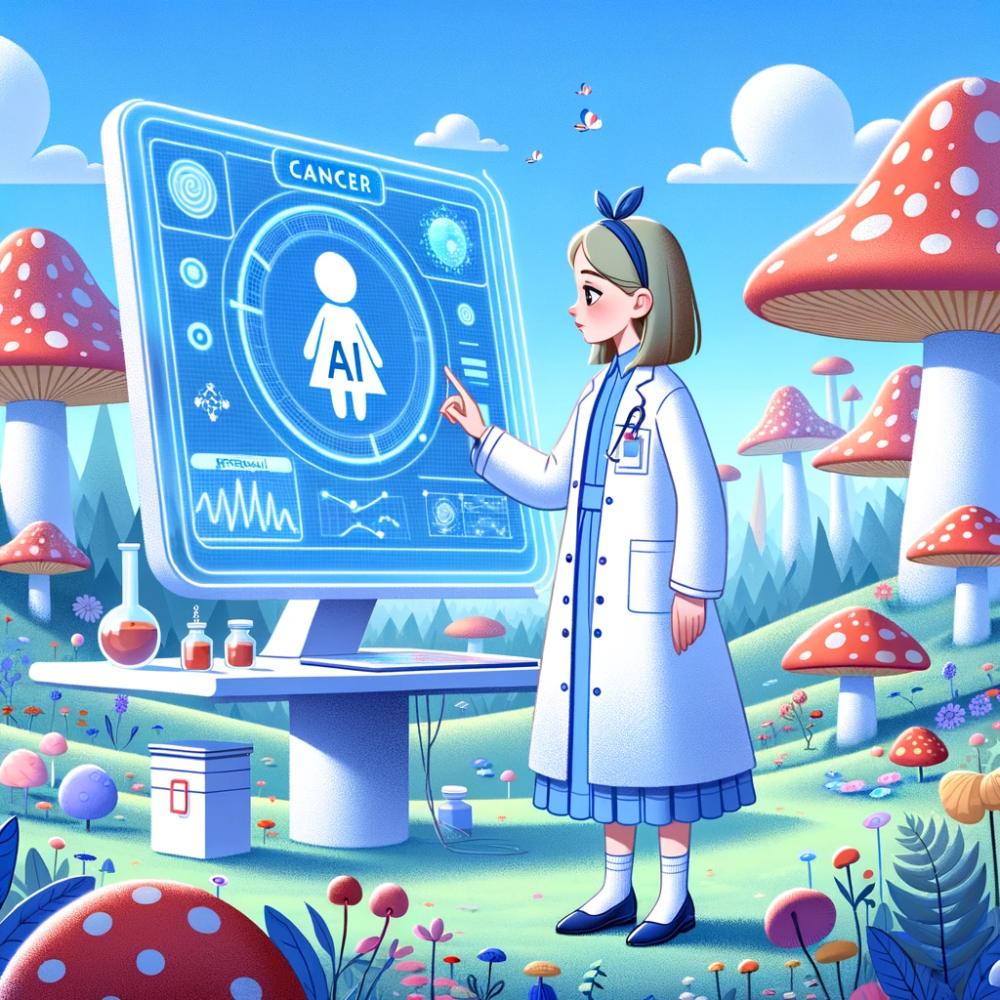

Alice in Researchland
How large language models are unlocking the ultimate cancer research assistant
Prologue
As part of World Cancer Day (4th Feb), the journal of Molecular Oncology invited researchers to take part in the 2023 Molecular Oncology Writing Competition aimed at highlighting how research in other areas of life sciences or technology influences the field of cancer biology and promotes cancer research.
I decided to give it a shot and submit an essay, and received an Honourable Mention!
Essay
Ever since I was little, science fiction has promised me a future where supercomputers would be the ultimate sidekicks for all scientists. Whether in the form of android assistants or soothing voices over screen interfaces, they all share the same appealing traits: great companionship and limitless knowledge.

As a computational biologist, my work focuses on studying cancer causality through the use of causal inference models. Building these models is a lengthy process. Over the course of years they grow and adapt to incorporate information from new studies. To do this, I must find, read, interpret, and receive feedback from other researchers before transforming and updating the model. If it seems promising, then we can proceed to design proper lab experiments for model validation. It is a long process, with many steps, paced by the vast number of cancer-related publications that are continuously released.
Despite my best efforts, it is impossible to keep up. There always seems to be another paper with crucial information that just came out. As a result, my models always feel incomplete, and whenever I finally update a model, I often find it is already outdated… And the cycle starts again…
As you can imagine, I often dream about the day when I arrive at the office to work with my all-knowing research sidekick — a super algorithm that has read every piece of text ever published by human society. This would include not just cancer research and scientific publications, but also literature, news, and websites from all over the globe. The algorithm would update every night and communicate with me using natural language. I would call it MINERVA, after the Greek goddess of science.
“Good morning, MINERVA. Today I want to update the bladder cancer model,” said Alice.
“Good morning, Alice. Since your last update, over 2,000 new studies came out. I identified forty-two potentially relevant ones. Shall I summarize them for you to review?” replied MINERVA.
“Yes, please. Also, attach links to the original papers in case I want to check the details. Send them to my tablet. I will ping you the relevant ones for you to draft the updated model. I will review and refine it before sending it to our collaborators in the lab for feedback.”
“Sure, Alice. Have a good read.”
It takes me about an hour to review the new data before I realize that one of the papers has conflicting information. I am not sure, so I summon MINERVA and ask:
“MINERVA, can you clarify something for me? I think that Paper A is reporting conflicting information about non-stop mutations in Gene B. Can you confirm?”
“Indeed, non-stop mutations in Gene B have been reported as associated and non-associated with bladder cancer in Publications O and K. The full texts are already available for your evaluation.”
“Thank you MINERVA.”
As I immerse myself in my work, I feel a growing sense of confidence and purpose. I know that I am not missing out on anything. I can consult the most well informed assistant to dissipate all my doubts, clarify my assumptions, and expedite my decisions. I am genuinely performing the best science I can, limited only by my curiosity. I am the scientist I have always aspired to be.
Only six months ago, my dream of having an all-knowing research sidekick with whom I could talk in natural language seemed impossibly distant. But that future is now!
Artificial intelligence (AI) research has already demonstrated its value in cancer research and in the clinic, particularly in patient stratification, image classification, and treatment management. However, recent developments in Large Language Models (LLMs) have taken AI research to new heights.
“Large Language Models are a type of artificial intelligence system that uses deep learning algorithms to analyze and generate natural language text.” The previous sentence was generated by ChatGPT — the LLM that took the world by storm. I requested a “rigorous explanation of LLMs”, and it provided a brief and reasonably precise summary. Although it is not perfect (yet) it is undeniably impressive and constantly improving, holding the potential to accelerate cancer research in an unprecedented manner.
LLMs can be trained quickly and accurately on all scientific literature relevant to cancer. With access to such a knowledge base, cancer researchers can: identify key connections between studies; uncover gaps in knowledge; verify whether their planned experiment has been conducted and published before; keep up-to-date with the latest developments in a concise yet meaningful manner; summarize new information for a quick overview before delving deeper into the subject; and ask questions to clarify any unclear points, as if talking to a super scholar. Sure, it requires fact checking, but isn’t that what science is all about?
If science is knowledge, and knowledge is power, then I would argue that AI research into LLMs is empowering cancer research by providing access to knowledge at our fingertips, freeing our time to engage in creative thinking and planning, while allowing us to focus our minds on understanding cancer. It is here to stay, and I believe it to be a true game changer.